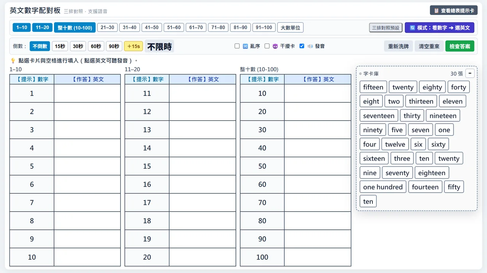
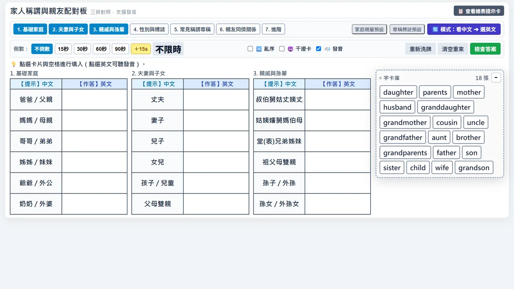
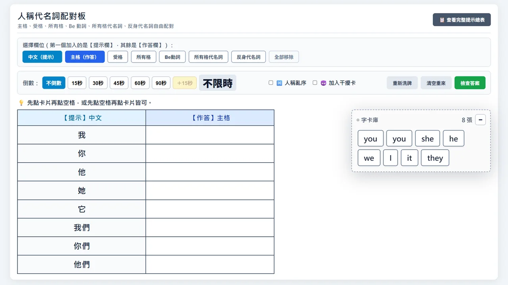
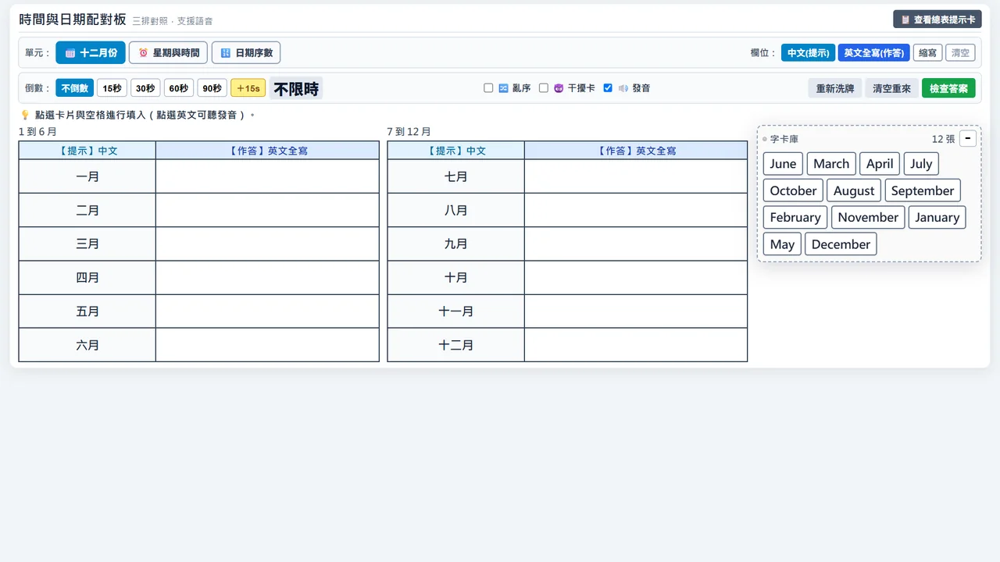
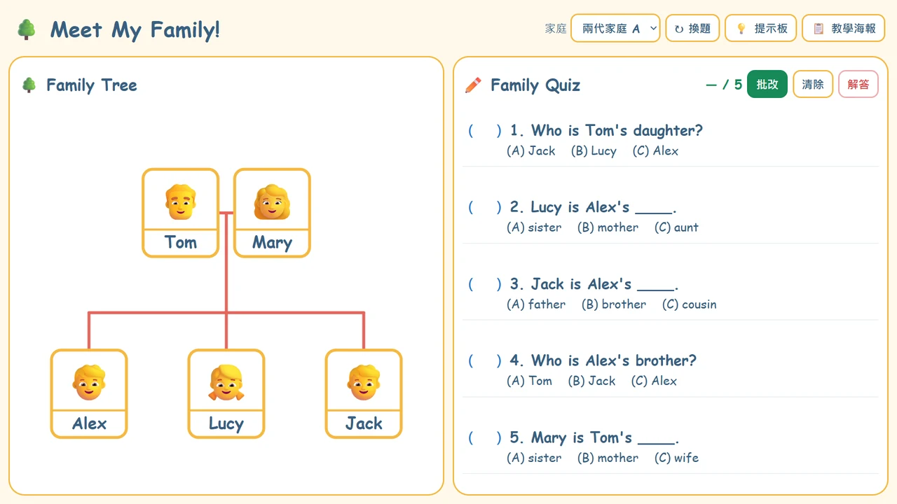
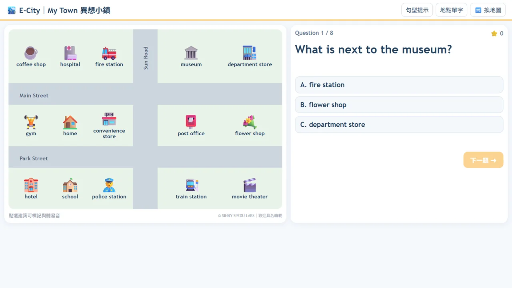
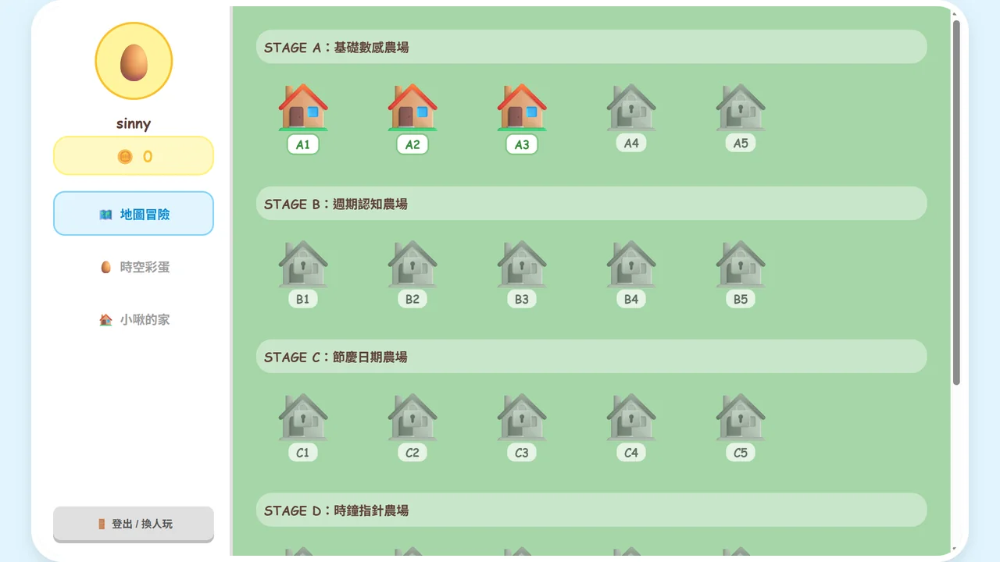
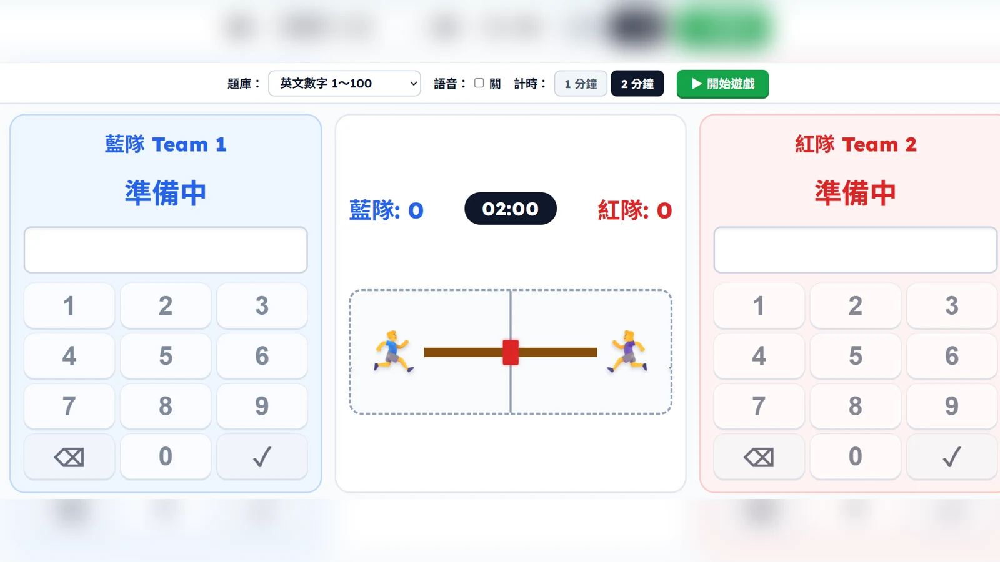

SINNY SPEDU LABS
教學資源
互動遊戲與教學教材，歡迎師生自由使用。
英文教學
9 款互動遊戲
英文數字配對板
配對數字、英文拼字與中文意思，可切換題組、方向及限時模式，適合個別練習或分組競賽。

家人稱謂與親友配對板
配對家人、親戚與人際稱謂的中英文，可依程度選擇基礎、尊稱或進階親屬題組。

人稱代名詞配對板
透過多欄配對整理主格、受格、所有格、Be 動詞及反身代名詞，練習辨認不同人稱變化。

時間與日期配對板
配對月份、星期、日期序數、時間單位及英文縮寫，可依課程進度自由切換練習題組。

異想家族｜Meet My Family!
觀察家庭樹、點讀親屬英文並完成五題選擇題，可切換三種難度，適合家庭關係與稱謂練習。

E-City｜My Town 異想小鎮
觀察隨機小鎮地圖，練習地點單字與八種位置句型，適合個別操作、口語問答或全班搶答。

小啾的時空冒險
用闖關與獎勵練習數字、星期、月份、日期、鐘點及生活作息；可使用代號記錄遊戲進度。

E-City拔河錦標賽
兩隊用英文數字、日期或八種數學題庫搶答，把繩索拉向己方；適合觸控螢幕與大電視。
生活教育
4 款異想聊天室其他資源
持續整理中其他教學資源整理中。